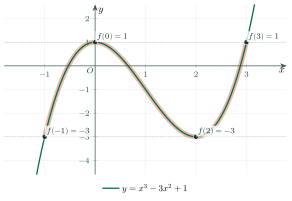
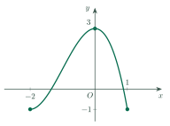
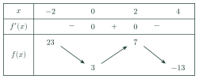
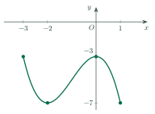
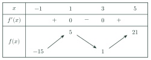
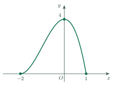
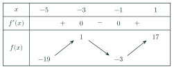

Maximum and Minimum ValuesGiá trị lớn nhất và giá trị nhỏ nhất của hàm số
Grade 12 · Topic: Applications of DerivativesLớp 12 · Chủ đề: Ứng dụng đạo hàm
1Lesson IntroductionGiới thiệu bài học
Learning goalsMục tiêu bài học
By the end of this lesson you can:
Sau bài học này, em có thể:
find the maximum and minimum values on a closed interval;
tìm giá trị lớn nhất và giá trị nhỏ nhất trên một đoạn;
use a variation table on other intervals;
dùng bảng biến thiên trên các khoảng khác;
solve a simple optimization problem;
giải bài toán tối ưu đơn giản;
explain your steps in English.
trình bày các bước bằng tiếng Anh.
2Mathematical VocabularyTừ vựng Toán học
maximum value – the largest value of a function on an interval.
Giá trị lớn nhất – giá trị lớn nhất của hàm số trên một khoảng.
minimum value – the smallest value of a function on an interval.
Giá trị nhỏ nhất – giá trị nhỏ nhất của hàm số trên một khoảng.
endpoint – the first or last point of an interval.
Đầu mút – điểm đầu hoặc điểm cuối của một khoảng.
continuous function – a function whose graph has no breaks.
Hàm số liên tục – hàm số có đồ thị không bị đứt.
critical point – a point where \(f'=0\) or \(f'\) does not exist.
Điểm tới hạn – điểm mà \(f'=0\) hoặc \(f'\) không xác định.
variation table – a table showing how \(f\) increases and decreases.
Bảng biến thiên – bảng cho biết \(f\) tăng giảm thế nào.
3Useful English PhrasesCụm từ tiếng Anh thường gặp
Find the maximum and minimum values of \(f\) on the interval \([0,2]\).
Tìm giá trị lớn nhất và nhỏ nhất của \(f\) trên đoạn \([0,2]\).
Evaluate the function at the endpoints.
Tính giá trị hàm số tại các đầu mút.
The maximum value is reached at \(x=2\).
Giá trị lớn nhất đạt tại \(x=2\).
Does the function have a minimum value? Explain.
Hàm số có giá trị nhỏ nhất không? Hãy giải thích.
4Prerequisite ReviewÔn tập kiến thức nền
You can already find the critical points of a function and the sign of \(f'\). A continuous function has no jumps or holes on its interval. Now we compare function values to find the largest and the smallest.
Em đã biết tìm điểm tới hạn và xét dấu \(f'\). Hàm số liên tục không bị đứt đoạn trên khoảng đang xét. Bây giờ ta so sánh các giá trị hàm số để tìm giá trị lớn nhất và nhỏ nhất.
5TheoryLý thuyết
5.1 DefinitionsĐịnh nghĩa
DefinitionĐịnh nghĩa
The maximum value of \(f\) on \(K\) is a number \(M=f(x_0)\) with \(x_0\in K\) and \(f(x)\le M\) for all \(x\in K\). The minimum value is defined in the same way with \(f(x)\ge m\). We write \(\max_K f\) and \(\min_K f\).
Giá trị lớn nhất của \(f\) trên \(K\) là số \(M=f(x_0)\) với \(x_0\in K\) và \(f(x)\le M\) với mọi \(x\in K\). Giá trị nhỏ nhất định nghĩa tương tự với \(f(x)\ge m\). Kí hiệu \(\max_K f\) và \(\min_K f\).
5.2 On a closed interval \([a,b]\)Trên đoạn \([a,b]\)
TheoremĐịnh lí
A continuous function on \([a,b]\) always has a maximum value and a minimum value.
Hàm số liên tục trên đoạn \([a,b]\) luôn có giá trị lớn nhất và giá trị nhỏ nhất.
Find the critical points of \(f\) that lie inside \((a,b)\).
Tìm các điểm tới hạn của \(f\) nằm trong \((a,b)\).
Compute \(f\) at these points and at the two endpoints \(a\) and \(b\).
Tính \(f\) tại các điểm đó và tại hai đầu mút \(a\), \(b\).
The largest number is the maximum value; the smallest is the minimum value.
Số lớn nhất là giá trị lớn nhất; số nhỏ nhất là giá trị nhỏ nhất.
5.3 On other intervalsTrên khoảng khác
On \((a,b)\), \((a,+\infty)\) and so on, make a variation table and look at the limits at the ends. A maximum or minimum may not exist.
Trên \((a,b)\), \((a,+\infty)\),… hãy lập bảng biến thiên và xét giới hạn ở hai đầu. Giá trị lớn nhất hay nhỏ nhất có thể không tồn tại.

6Worked ExamplesVí dụ có lời giải
ExampleVí dụ 1BasicCơ bản – A closed intervalTrên một đoạn
Find the maximum and minimum values of \(f(x)=x^3-3x+1\) on \([0,2]\).
Tìm giá trị lớn nhất và nhỏ nhất của \(f(x)=x^3-3x+1\) trên đoạn \([0,2]\).
Analysis: Use the three-step method on a closed interval.
Phân tích: Dùng phương pháp ba bước trên một đoạn.
\(f'(x)=3x^2-3=0\) gives \(x=\pm1\). Only \(x=1\) is in \((0,2)\).
\(f'(x)=3x^2-3=0\) cho \(x=\pm1\). Chỉ \(x=1\) thuộc \((0,2)\).
\(f(0)=1\), \(f(1)=-1\), \(f(2)=3\).
\(f(0)=1\), \(f(1)=-1\), \(f(2)=3\).
The maximum value is \(3\) (at \(x=2\)); the minimum value is \(-1\) (at \(x=1\)).
Giá trị lớn nhất là \(3\) (tại \(x=2\)); giá trị nhỏ nhất là \(-1\) (tại \(x=1\)).
ExampleVí dụ 2IntermediateTrung bình – Two critical points insideHai điểm tới hạn nằm trong đoạn
Find the maximum and minimum values of \(f(x)=2x^3+3x^2-12x\) on \([-3,2]\).
Tìm giá trị lớn nhất và nhỏ nhất của \(f(x)=2x^3+3x^2-12x\) trên đoạn \([-3,2]\).
Analysis: Factor \(f'\) and check both roots.
Phân tích: Phân tích \(f'\) và xét cả hai nghiệm.
\(f'(x)=6x^2+6x-12=6(x+2)(x-1)\). Both \(x=-2\) and \(x=1\) are in \((-3,2)\).
\(f'(x)=6x^2+6x-12=6(x+2)(x-1)\). Cả \(x=-2\) và \(x=1\) đều thuộc \((-3,2)\).
\(f(-3)=9\), \(f(-2)=20\), \(f(1)=-7\), \(f(2)=4\).
\(f(-3)=9\), \(f(-2)=20\), \(f(1)=-7\), \(f(2)=4\).
So the maximum value is \(20\) and the minimum value is \(-7\).
Vậy giá trị lớn nhất là \(20\) và giá trị nhỏ nhất là \(-7\).
ExampleVí dụ 3IntermediateTrung bình – An interval that is not closedKhoảng không phải đoạn
Find the minimum value of \(f(x)=x+\dfrac4x\) on \((0,+\infty)\). Does a maximum value exist?
Tìm giá trị nhỏ nhất của \(f(x)=x+\dfrac4x\) trên \((0,+\infty)\). Có giá trị lớn nhất không?
Analysis: There are no endpoints in the interval, so use a variation table.
Phân tích: Khoảng này không chứa đầu mút nên dùng bảng biến thiên.
\(f'(x)=1-\dfrac4{x^2}=0\) gives \(x=2\). \(f'\lt 0\) on \((0,2)\) and \(f'>0\) on \((2,+\infty)\).
\(f'(x)=1-\dfrac4{x^2}=0\) cho \(x=2\). \(f'\lt 0\) trên \((0,2)\) và \(f'>0\) trên \((2,+\infty)\).
So the minimum value is \(f(2)=4\).
Vậy giá trị nhỏ nhất là \(f(2)=4\).
As \(x\to0^+\) or \(x\to+\infty\), \(f(x)\to+\infty\), so there is no maximum value.
Khi \(x\to0^+\) hoặc \(x\to+\infty\) thì \(f(x)\to+\infty\), nên không có giá trị lớn nhất.
ExampleVí dụ 4AdvancedNâng cao – An applicationBài toán thực tế
A rectangle has perimeter 20 cm. Find its largest possible area.
Một hình chữ nhật có chu vi 20 cm. Tìm diện tích lớn nhất có thể.
Analysis: Write the area as a function of one side.
Phân tích: Viết diện tích như hàm số của một cạnh.
Let one side be \(x\) cm, so the other is \(10-x\), with \(0\lt x\lt 10\). The area is \(S(x)=x(10-x)=10x-x^2\).
Gọi một cạnh là \(x\) cm thì cạnh kia là \(10-x\), với \(0\lt x\lt 10\). Diện tích \(S(x)=x(10-x)=10x-x^2\).
\(S'(x)=10-2x=0\) gives \(x=5\). \(S'>0\) for \(x\lt 5\) and \(S'\lt 0\) for \(x>5\).
\(S'(x)=10-2x=0\) cho \(x=5\). \(S'>0\) khi \(x\lt 5\) và \(S'\lt 0\) khi \(x>5\).
The maximum is \(S(5)=25\): the best rectangle is a square.
Giá trị lớn nhất là \(S(5)=25\): hình chữ nhật tốt nhất là hình vuông.
7PracticeBài tập luyện tập
A. Multiple ChoiceA. Trắc nghiệm nhiều lựa chọn
What is the maximum value of \(f(x)=-x^2+2x+3\) on \(\mathbb{R}\)?
Giá trị lớn nhất của \(f(x)=-x^2+2x+3\) trên \(\mathbb{R}\) là bao nhiêu?
Answer: b. The vertex is at \(x=1\), and \(f(1)=4\).
Đáp án b. Đỉnh tại \(x=1\), và \(f(1)=4\).
What is the minimum value of \(f(x)=x^2-2x\) on \([0,3]\)?
Giá trị nhỏ nhất của \(f(x)=x^2-2x\) trên \([0,3]\) là bao nhiêu?
Answer: a. \(f(0)=0\), \(f(1)=-1\), \(f(3)=3\).
Đáp án a. \(f(0)=0\), \(f(1)=-1\), \(f(3)=3\).
What is the minimum value of \(f(x)=4-x^2\) on \([-1,3]\)?
Giá trị nhỏ nhất của \(f(x)=4-x^2\) trên \([-1,3]\) là bao nhiêu?
Answer: a. \(f(-1)=3\), \(f(0)=4\), \(f(3)=-5\).
Đáp án a. \(f(-1)=3\), \(f(0)=4\), \(f(3)=-5\).
B. True or FalseB. Đúng hoặc sai
True or false: a continuous function on a closed interval \([a,b]\) always has a maximum value and a minimum value.
Đúng hay sai: hàm số liên tục trên đoạn \([a,b]\) luôn có giá trị lớn nhất và giá trị nhỏ nhất.
True. This is the extreme value theorem.
Đúng. Đây là định lí về giá trị lớn nhất, nhỏ nhất của hàm liên tục trên đoạn.
True or false: \(f(x)=\dfrac1x\) has a maximum value on \((0,1]\).
Đúng hay sai: \(f(x)=\dfrac1x\) có giá trị lớn nhất trên \((0,1]\).
False. \(f(x)\to+\infty\) as \(x\to0^+\). The minimum value is \(f(1)=1\).
Sai. \(f(x)\to+\infty\) khi \(x\to0^+\). Giá trị nhỏ nhất là \(f(1)=1\).
C. Short AnswerC. Trả lời ngắn
Find the maximum value of \(f(x)=x^3-3x\) on \([0,2]\).
Tìm giá trị lớn nhất của \(f(x)=x^3-3x\) trên đoạn \([0,2]\).
Enter a number.
Nhập một số.
Answer: 2. \(f(0)=0\), \(f(1)=-2\), \(f(2)=2\).
Đáp án: 2. \(f(0)=0\), \(f(1)=-2\), \(f(2)=2\).
Find the minimum value of \(f(x)=x^3-3x\) on \([0,2]\).
Tìm giá trị nhỏ nhất của \(f(x)=x^3-3x\) trên đoạn \([0,2]\).
Enter a number.
Nhập một số.
Answer: \(-2\), reached at \(x=1\).
Đáp án: \(-2\), đạt tại \(x=1\).
Find the minimum value of \(f(x)=x+\dfrac9x\) on \((0,+\infty)\).
Tìm giá trị nhỏ nhất của \(f(x)=x+\dfrac9x\) trên \((0,+\infty)\).
Enter a number.
Nhập một số.
Answer: 6. \(f'(x)=1-\dfrac9{x^2}=0\) at \(x=3\), and \(f(3)=3+3=6\).
Đáp án: 6. \(f'(x)=1-\dfrac9{x^2}=0\) tại \(x=3\) và \(f(3)=3+3=6\).
Find the maximum value of \(f(x)=x^4-2x^2\) on \([0,2]\).
Tìm giá trị lớn nhất của \(f(x)=x^4-2x^2\) trên đoạn \([0,2]\).
Enter a number.
Nhập một số.
Answer: 8. \(f(0)=0\), \(f(1)=-1\), \(f(2)=8\).
Đáp án: 8. \(f(0)=0\), \(f(1)=-1\), \(f(2)=8\).
A rectangle has perimeter 20 cm. What is the largest possible area, in \(\text{cm}^2\)?
Một hình chữ nhật có chu vi 20 cm. Diện tích lớn nhất là bao nhiêu \(\text{cm}^2\)?
Enter a number.
Nhập một số.
Answer: 25 (a square with side 5 cm).
Đáp án: 25 (hình vuông cạnh 5 cm).
A. Multiple ChoiceA. Trắc nghiệm nhiều lựa chọn
What is the maximum value of \(f(x)=-x^2+4x+1\) on \(\mathbb{R}\)?
Giá trị lớn nhất của \(f(x)=-x^2+4x+1\) trên \(\mathbb{R}\) là bao nhiêu?
Answer: c. The vertex is at \(x=2\), and \(f(2)=-4+8+1=5\).
Đáp án c. Đỉnh tại \(x=2\), và \(f(2)=-4+8+1=5\).
What is the minimum value of \(f(x)=x^2-4x\) on \([0,5]\)?
Giá trị nhỏ nhất của \(f(x)=x^2-4x\) trên \([0,5]\) là bao nhiêu?
Answer: a. \(f(0)=0\), \(f(2)=-4\), \(f(5)=5\).
Đáp án a. \(f(0)=0\), \(f(2)=-4\), \(f(5)=5\).
What is the minimum value of \(f(x)=9-x^2\) on \([-2,4]\)?
Giá trị nhỏ nhất của \(f(x)=9-x^2\) trên \([-2,4]\) là bao nhiêu?
Answer: c. \(f(-2)=5\), \(f(0)=9\), \(f(4)=-7\).
Đáp án c. \(f(-2)=5\), \(f(0)=9\), \(f(4)=-7\).
B. True or FalseB. Đúng hoặc sai
True or false: \(f(x)=x^2\) has both a maximum value and a minimum value on \([-1,2]\).
Đúng hay sai: \(f(x)=x^2\) có cả giá trị lớn nhất và giá trị nhỏ nhất trên đoạn \([-1,2]\).
True. The minimum value is \(f(0)=0\) and the maximum value is \(f(2)=4\).
Đúng. Giá trị nhỏ nhất là \(f(0)=0\) và giá trị lớn nhất là \(f(2)=4\).
True or false: \(f(x)=\dfrac1x\) has a minimum value on \((0,1)\).
Đúng hay sai: \(f(x)=\dfrac1x\) có giá trị nhỏ nhất trên \((0,1)\).
False. \(f(x)\to+\infty\) as \(x\to0^+\), and \(f(x)\to1\) as \(x\to1^-\) without ever reaching 1. So there is no minimum (and no maximum).
Sai. \(f(x)\to+\infty\) khi \(x\to0^+\), và \(f(x)\to1\) khi \(x\to1^-\) nhưng không bao giờ bằng 1. Vậy không có giá trị nhỏ nhất (và cũng không có giá trị lớn nhất).
C. Short AnswerC. Trả lời ngắn
Find the maximum value of \(f(x)=x^3-12x\) on \([0,4]\).
Tìm giá trị lớn nhất của \(f(x)=x^3-12x\) trên đoạn \([0,4]\).
Enter a number.
Nhập một số.
Answer: 16. \(f(0)=0\), \(f(2)=-16\), \(f(4)=16\).
Đáp án: 16. \(f(0)=0\), \(f(2)=-16\), \(f(4)=16\).
Find the minimum value of \(f(x)=x^3-12x\) on \([0,4]\).
Tìm giá trị nhỏ nhất của \(f(x)=x^3-12x\) trên đoạn \([0,4]\).
Enter a number.
Nhập một số.
Answer: \(-16\). \(-16\), reached at \(x=2\).
Đáp án: \(-16\). \(-16\), đạt tại \(x=2\).
Find the minimum value of \(f(x)=x+\dfrac{16}{x}\) on \((0,+\infty)\).
Tìm giá trị nhỏ nhất của \(f(x)=x+\dfrac{16}{x}\) trên \((0,+\infty)\).
Enter a number.
Nhập một số.
Answer: 8. \(f'(x)=1-\dfrac{16}{x^2}=0\) at \(x=4\), and \(f(4)=4+4=8\).
Đáp án: 8. \(f'(x)=1-\dfrac{16}{x^2}=0\) tại \(x=4\) và \(f(4)=4+4=8\).
Find the maximum value of \(f(x)=x^4-8x^2\) on \([0,3]\).
Tìm giá trị lớn nhất của \(f(x)=x^4-8x^2\) trên đoạn \([0,3]\).
Enter a number.
Nhập một số.
Answer: 9. \(f(0)=0\), \(f(2)=-16\), \(f(3)=9\).
Đáp án: 9. \(f(0)=0\), \(f(2)=-16\), \(f(3)=9\).
A rectangle has perimeter 40 cm. What is the largest possible area, in \(\text{cm}^2\)?
Một hình chữ nhật có chu vi 40 cm. Diện tích lớn nhất là bao nhiêu \(\text{cm}^2\)?
Enter a number.
Nhập một số.
Answer: 100. 100 (a square with side 10 cm).
Đáp án: 100. 100 (hình vuông cạnh 10 cm).
A. Multiple ChoiceA. Trắc nghiệm nhiều lựa chọn
What is the maximum value of \(f(x)=-x^2-2x+5\) on \(\mathbb{R}\)?
Giá trị lớn nhất của \(f(x)=-x^2-2x+5\) trên \(\mathbb{R}\) là bao nhiêu?
Answer: b. The vertex is at \(x=-1\), and \(f(-1)=-1+2+5=6\).
Đáp án b. Đỉnh tại \(x=-1\), và \(f(-1)=-1+2+5=6\).
What is the minimum value of \(f(x)=x^2-6x\) on \([0,4]\)?
Giá trị nhỏ nhất của \(f(x)=x^2-6x\) trên \([0,4]\) là bao nhiêu?
Answer: b. \(f(0)=0\), \(f(3)=-9\), \(f(4)=-8\).
Đáp án b. \(f(0)=0\), \(f(3)=-9\), \(f(4)=-8\).
What is the minimum value of \(f(x)=1-x^2\) on \([-3,2]\)?
Giá trị nhỏ nhất của \(f(x)=1-x^2\) trên \([-3,2]\) là bao nhiêu?
Answer: d. \(f(-3)=-8\), \(f(0)=1\), \(f(2)=-3\).
Đáp án d. \(f(-3)=-8\), \(f(0)=1\), \(f(2)=-3\).
B. True or FalseB. Đúng hoặc sai
True or false: \(f(x)=x^3\) has both a maximum value and a minimum value on \([-2,1]\).
Đúng hay sai: \(f(x)=x^3\) có cả giá trị lớn nhất và giá trị nhỏ nhất trên đoạn \([-2,1]\).
True. The minimum value is \(f(-2)=-8\) and the maximum value is \(f(1)=1\).
Đúng. Giá trị nhỏ nhất là \(f(-2)=-8\) và giá trị lớn nhất là \(f(1)=1\).
True or false: \(f(x)=x^2\) has a maximum value on the interval \((0,2)\).
Đúng hay sai: \(f(x)=x^2\) có giá trị lớn nhất trên khoảng \((0,2)\).
False. The values get close to 4 as \(x\to2^-\) but never reach it, so there is no maximum.
Sai. Giá trị tiến gần 4 khi \(x\to2^-\) nhưng không bao giờ bằng 4, nên không có giá trị lớn nhất.
C. Short AnswerC. Trả lời ngắn
Find the maximum value of \(f(x)=x^3-3x^2-9x\) on \([-2,4]\).
Tìm giá trị lớn nhất của \(f(x)=x^3-3x^2-9x\) trên đoạn \([-2,4]\).
Enter a number.
Nhập một số.
Answer: 5. \(f'(x)=3(x-3)(x+1)\). \(f(-2)=-2\), \(f(-1)=5\), \(f(3)=-27\), \(f(4)=-20\).
Đáp án: 5. \(f'(x)=3(x-3)(x+1)\). \(f(-2)=-2\), \(f(-1)=5\), \(f(3)=-27\), \(f(4)=-20\).
Find the minimum value of \(f(x)=x^3-3x^2-9x\) on \([-2,4]\).
Tìm giá trị nhỏ nhất của \(f(x)=x^3-3x^2-9x\) trên đoạn \([-2,4]\).
Enter a number.
Nhập một số.
Answer: \(-27\). \(-27\), reached at \(x=3\).
Đáp án: \(-27\). \(-27\), đạt tại \(x=3\).
Find the minimum value of \(f(x)=4x+\dfrac9x\) on \((0,+\infty)\).
Tìm giá trị nhỏ nhất của \(f(x)=4x+\dfrac9x\) trên \((0,+\infty)\).
Enter a number.
Nhập một số.
Answer: 12. \(f'(x)=4-\dfrac9{x^2}=0\) at \(x=\dfrac32\), and \(f\left(\dfrac32\right)=6+6=12\).
Đáp án: 12. \(f'(x)=4-\dfrac9{x^2}=0\) tại \(x=\dfrac32\) và \(f\left(\dfrac32\right)=6+6=12\).
Find the maximum value of \(f(x)=x^4-4x^2\) on \([0,3]\).
Tìm giá trị lớn nhất của \(f(x)=x^4-4x^2\) trên đoạn \([0,3]\).
Enter a number.
Nhập một số.
Answer: 45. \(f(0)=0\), \(f(\sqrt2)=-4\), \(f(3)=45\).
Đáp án: 45. \(f(0)=0\), \(f(\sqrt2)=-4\), \(f(3)=45\).
A rectangle has perimeter 36 cm. What is the largest possible area, in \(\text{cm}^2\)?
Một hình chữ nhật có chu vi 36 cm. Diện tích lớn nhất là bao nhiêu \(\text{cm}^2\)?
Enter a number.
Nhập một số.
Answer: 81. 81 (a square with side 9 cm).
Đáp án: 81. 81 (hình vuông cạnh 9 cm).
D. Self-practice: Multiple ChoiceD. Tự luyện: trắc nghiệm
The figure shows the graph of \(y=f(x)\) on \([-2;\,1]\). The largest value of \(f\) on \([-2;\,1]\) is…

Hình vẽ là đồ thị của hàm số \(y=f(x)\) trên đoạn \([-2;\,1]\). Giá trị lớn nhất của \(f\) trên đoạn \([-2;\,1]\) là
Answer: d. Compare the heights at the ends and at the turning points: \(f(-2)=-1, f(0)=3, f(1)=-1\); the largest is \(3\).
Đáp án d. So sánh độ cao tại hai đầu mút và các điểm cực trị: \(f(-2)=-1, f(0)=3, f(1)=-1\); giá trị lớn nhất là \(3\).
The variation table of \(y=f(x)\) on \([-2;\,4]\) is shown. The smallest value of \(f\) on this interval is…

Cho bảng biến thiên của hàm số \(y=f(x)\) trên đoạn \([-2;\,4]\). Giá trị nhỏ nhất của \(f\) trên đoạn này là
Answer: d. Compare all the values in the bottom row: \(23, 3, 7, -13\).
Đáp án d. So sánh mọi giá trị ở hàng cuối: \(23, 3, 7, -13\).
The largest value of \(y=\sin x\cos x\) on \(\mathbb R\) is…
Giá trị lớn nhất của hàm số \(y=\sin x\cos x\) trên \(\mathbb R\) là
Answer: b. Write \(y\) in terms of one quantity (for example \(t=\sin x\in[-1;1]\), or \(a\sin x+b\cos x=\sqrt{a^2+b^2}\sin(x+\varphi)\)) and study it on its range. Answer: \(\dfrac12\).
Đáp án b. Đưa \(y\) về một đại lượng (chẳng hạn \(t=\sin x\in[-1;1]\), hoặc \(a\sin x+b\cos x=\sqrt{a^2+b^2}\sin(x+\varphi)\)) rồi khảo sát trên miền giá trị của nó. Đáp số: \(\dfrac12\).
The largest value of \(y=x+\sqrt{2-x^2}\) (on its domain) is…
Giá trị lớn nhất của hàm số \(y=x+\sqrt{2-x^2}\) (trên tập xác định) là
Answer: b. Find the domain (a closed interval), solve \(y'=0\) inside it, then compare the values at the critical points and at the ends: \(2\).
Đáp án b. Tìm tập xác định (một đoạn), giải \(y'=0\) trên đó rồi so sánh giá trị tại điểm tới hạn và hai đầu mút: \(2\).
Find \(m\) so that the largest value of \(f(x)=x^2-2x+m\) on \([0;\,4]\) equals \(6\).
Tìm \(m\) để giá trị lớn nhất của hàm số \(f(x)=x^2-2x+m\) trên đoạn \([0;\,4]\) bằng \(6\).
Answer: c. On \([0;4]\): smallest \(f(1)=m-1\), largest \(f(4)=m+8\). Setting the largest equal to \(6\) gives \(m=-2\).
Đáp án c. Trên \([0;4]\): nhỏ nhất \(f(1)=m-1\), lớn nhất \(f(4)=m+8\). Cho giá trị lớn nhất bằng \(6\) được \(m=-2\).
The smallest value of \(y=x^2-2\ln x\) on \(\left[\dfrac1e;\,e\right]\) is…
Giá trị nhỏ nhất của hàm số \(y=x^2-2\ln x\) trên đoạn \(\left[\dfrac1e;\,e\right]\) là
Answer: a. Solve \(y'=0\) in the interval, then compare the values at that point and at the two ends. Answer: \(1\).
Đáp án a. Giải \(y'=0\) trên đoạn, rồi so sánh giá trị tại điểm đó và tại hai đầu mút. Đáp số: \(1\).
During a festival, the number of visitors (hundreds) \(t\) hours after opening is \(N(t)=-t^3+12t^2+5\), \(0\le t\le10\). The largest number of visitors (hundreds) is…
Trong một lễ hội, số khách (trăm người) sau \(t\) giờ kể từ khi mở cửa là \(N(t)=-t^3+12t^2+5\), \(0\le t\le10\). Số khách lớn nhất (trăm người) là
Answer: c. \(N'(t)=-3t^2+24t=0\Leftrightarrow t=0\) or \(t=8\); \(N(0)=5\), \(N(8)=261\), \(N(10)=205\). Largest: \(261\).
Đáp án c. \(N'(t)=-3t^2+24t=0\Leftrightarrow t=0\) hoặc \(t=8\); \(N(0)=5\), \(N(8)=261\), \(N(10)=205\). Lớn nhất: \(261\).
Let \(M\), \(m\) be the largest and smallest values of \(f(x)=x^3-12x\) on \([-1;\,4]\). Then \(M+m=\)…
Gọi \(M\), \(m\) là giá trị lớn nhất và nhỏ nhất của hàm số \(f(x)=x^3-12x\) trên đoạn \([-1;\,4]\). Khi đó \(M+m=\)
Answer: b. Critical points \(x=\pm2\); compare \(f(-1)=11, f(4)=16, f(2)=-16\): \(M=16\), \(m=-16\), \(M+m=0\).
Đáp án b. Điểm tới hạn \(x=\pm2\); so sánh \(f(-1)=11, f(4)=16, f(2)=-16\): \(M=16\), \(m=-16\), \(M+m=0\).
D. Self-practice: Multiple ChoiceD. Tự luyện: trắc nghiệm
The figure below shows the graph of \(y=f(x)\) on \([-3;\,1]\). The smallest value of \(f\) on \([-3;\,1]\) is…

Hình vẽ dưới đây là đồ thị của hàm số \(y=f(x)\) trên đoạn \([-3;\,1]\). Giá trị nhỏ nhất của \(f\) trên đoạn \([-3;\,1]\) là
Answer: c. Compare the heights at the ends and at the turning points: \(f(-3)=-3, f(-2)=-7, f(0)=-3, f(1)=-7\); the smallest is \(-7\).
Đáp án c. So sánh độ cao tại hai đầu mút và các điểm cực trị: \(f(-3)=-3, f(-2)=-7, f(0)=-3, f(1)=-7\); giá trị nhỏ nhất là \(-7\).
Here is the variation table of \(y=f(x)\) on \([-1;\,5]\). The largest value of \(f\) on this interval is…

Dưới đây là bảng biến thiên của hàm số \(y=f(x)\) trên đoạn \([-1;\,5]\). Giá trị lớn nhất của \(f\) trên đoạn này là
Answer: d. Compare all the values in the bottom row: \(-15, 5, 1, 21\).
Đáp án d. So sánh mọi giá trị ở hàng cuối: \(-15, 5, 1, 21\).
The largest value of \(y=3\sin x+4\cos x\) on \(\mathbb R\) is…
Giá trị lớn nhất của hàm số \(y=3\sin x+4\cos x\) trên \(\mathbb R\) là
Answer: d. Write \(y\) in terms of one quantity (for example \(t=\sin x\in[-1;1]\), or \(a\sin x+b\cos x=\sqrt{a^2+b^2}\sin(x+\varphi)\)) and study it on its range. Answer: \(5\).
Đáp án d. Đưa \(y\) về một đại lượng (chẳng hạn \(t=\sin x\in[-1;1]\), hoặc \(a\sin x+b\cos x=\sqrt{a^2+b^2}\sin(x+\varphi)\)) rồi khảo sát trên miền giá trị của nó. Đáp số: \(5\).
The largest value of \(y=x+\sqrt{4-x^2}\) (on its domain) is…
Giá trị lớn nhất của hàm số \(y=x+\sqrt{4-x^2}\) (trên tập xác định) là
Answer: a. Find the domain (a closed interval), solve \(y'=0\) inside it, then compare the values at the critical points and at the ends: \(2\sqrt2\).
Đáp án a. Tìm tập xác định (một đoạn), giải \(y'=0\) trên đó rồi so sánh giá trị tại điểm tới hạn và hai đầu mút: \(2\sqrt2\).
Find \(m\) so that the smallest value of \(f(x)=x^2-2x+m\) on \([0;\,3]\) equals \(4\).
Tìm \(m\) để giá trị nhỏ nhất của hàm số \(f(x)=x^2-2x+m\) trên đoạn \([0;\,3]\) bằng \(4\).
Answer: c. On \([0;3]\): smallest \(f(1)=m-1\), largest \(f(3)=m+3\). Setting the smallest equal to \(4\) gives \(m=5\).
Đáp án c. Trên \([0;3]\): nhỏ nhất \(f(1)=m-1\), lớn nhất \(f(3)=m+3\). Cho giá trị nhỏ nhất bằng \(4\) được \(m=5\).
The largest value of \(y=xe^{-x}\) on \([0;\,2]\) is…
Giá trị lớn nhất của hàm số \(y=xe^{-x}\) trên đoạn \([0;\,2]\) là
Answer: a. Solve \(y'=0\) in the interval, then compare the values at that point and at the two ends. Answer: \(\dfrac1e\).
Đáp án a. Giải \(y'=0\) trên đoạn, rồi so sánh giá trị tại điểm đó và tại hai đầu mút. Đáp số: \(\dfrac1e\).
During a festival, the number of visitors (hundreds) \(t\) hours after opening is \(N(t)=-t^3+6t^2+5\), \(0\le t\le6\). After how many hours is the number of visitors largest?
Trong một lễ hội, số khách (trăm người) sau \(t\) giờ kể từ khi mở cửa là \(N(t)=-t^3+6t^2+5\), \(0\le t\le6\). Sau bao nhiêu giờ thì số khách đông nhất?
Answer: d. \(N'(t)=3t(4-t)\): \(N\) increases on \((0;4)\) and decreases on \((4;6)\), so the largest value is at \(t=4\).
Đáp án d. \(N'(t)=3t(4-t)\): \(N\) tăng trên \((0;4)\) và giảm trên \((4;6)\), nên lớn nhất tại \(t=4\).
Let \(M\), \(m\) be the largest and smallest values of \(f(x)=x^3-3x\) on \([-1;\,4]\). Then \(M+m=\)…
Gọi \(M\), \(m\) là giá trị lớn nhất và nhỏ nhất của hàm số \(f(x)=x^3-3x\) trên đoạn \([-1;\,4]\). Khi đó \(M+m=\)
Answer: d. Critical points \(x=\pm1\); compare \(f(-1)=2, f(4)=52, f(1)=-2\): \(M=52\), \(m=-2\), \(M+m=50\).
Đáp án d. Điểm tới hạn \(x=\pm1\); so sánh \(f(-1)=2, f(4)=52, f(1)=-2\): \(M=52\), \(m=-2\), \(M+m=50\).
D. Self-practice: Multiple ChoiceD. Tự luyện: trắc nghiệm
Look at the figure. It shows the graph of \(y=f(x)\) on \([-2;\,1]\). The largest value of \(f\) on \([-2;\,1]\) is…

Quan sát hình vẽ: đây là đồ thị của hàm số \(y=f(x)\) trên đoạn \([-2;\,1]\). Giá trị lớn nhất của \(f\) trên đoạn \([-2;\,1]\) là
Answer: a. Compare the heights at the ends and at the turning points: \(f(-2)=0, f(0)=4, f(1)=0\); the largest is \(4\).
Đáp án a. So sánh độ cao tại hai đầu mút và các điểm cực trị: \(f(-2)=0, f(0)=4, f(1)=0\); giá trị lớn nhất là \(4\).
Use the variation table of \(y=f(x)\) on \([-5;\,1]\) below. The smallest value of \(f\) on this interval is…

Dựa vào bảng biến thiên của hàm số \(y=f(x)\) trên đoạn \([-5;\,1]\). Giá trị nhỏ nhất của \(f\) trên đoạn này là
Answer: d. Compare all the values in the bottom row: \(-19, 1, -3, 17\).
Đáp án d. So sánh mọi giá trị ở hàng cuối: \(-19, 1, -3, 17\).
The largest value of \(y=\sin^2x-4\sin x+3\) on \(\mathbb R\) is…
Giá trị lớn nhất của hàm số \(y=\sin^2x-4\sin x+3\) trên \(\mathbb R\) là
Answer: d. Write \(y\) in terms of one quantity (for example \(t=\sin x\in[-1;1]\), or \(a\sin x+b\cos x=\sqrt{a^2+b^2}\sin(x+\varphi)\)) and study it on its range. Answer: \(8\).
Đáp án d. Đưa \(y\) về một đại lượng (chẳng hạn \(t=\sin x\in[-1;1]\), hoặc \(a\sin x+b\cos x=\sqrt{a^2+b^2}\sin(x+\varphi)\)) rồi khảo sát trên miền giá trị của nó. Đáp số: \(8\).
The smallest value of \(y=\sqrt x+\sqrt{4-x}\) (on its domain) is…
Giá trị nhỏ nhất của hàm số \(y=\sqrt x+\sqrt{4-x}\) (trên tập xác định) là
Answer: d. Find the domain (a closed interval), solve \(y'=0\) inside it, then compare the values at the critical points and at the ends: \(2\).
Đáp án d. Tìm tập xác định (một đoạn), giải \(y'=0\) trên đó rồi so sánh giá trị tại điểm tới hạn và hai đầu mút: \(2\).
Find \(m\) so that the largest value of \(f(x)=x^2-2x+m\) on \([0;\,3]\) equals \(-1\).
Tìm \(m\) để giá trị lớn nhất của hàm số \(f(x)=x^2-2x+m\) trên đoạn \([0;\,3]\) bằng \(-1\).
Answer: b. On \([0;3]\): smallest \(f(1)=m-1\), largest \(f(3)=m+3\). Setting the largest equal to \(-1\) gives \(m=-4\).
Đáp án b. Trên \([0;3]\): nhỏ nhất \(f(1)=m-1\), lớn nhất \(f(3)=m+3\). Cho giá trị lớn nhất bằng \(-1\) được \(m=-4\).
The largest value of \(y=e^x-x\) on \([-1;\,1]\) is…
Giá trị lớn nhất của hàm số \(y=e^x-x\) trên đoạn \([-1;\,1]\) là
Answer: a. Solve \(y'=0\) in the interval, then compare the values at that point and at the two ends. Answer: \(e-1\).
Đáp án a. Giải \(y'=0\) trên đoạn, rồi so sánh giá trị tại điểm đó và tại hai đầu mút. Đáp số: \(e-1\).
During a festival, the number of visitors (hundreds) \(t\) hours after opening is \(N(t)=-t^3+12t^2+5\), \(0\le t\le11\). The largest number of visitors (hundreds) is…
Trong một lễ hội, số khách (trăm người) sau \(t\) giờ kể từ khi mở cửa là \(N(t)=-t^3+12t^2+5\), \(0\le t\le11\). Số khách lớn nhất (trăm người) là
Answer: a. \(N'(t)=-3t^2+24t=0\Leftrightarrow t=0\) or \(t=8\); \(N(0)=5\), \(N(8)=261\), \(N(11)=126\). Largest: \(261\).
Đáp án a. \(N'(t)=-3t^2+24t=0\Leftrightarrow t=0\) hoặc \(t=8\); \(N(0)=5\), \(N(8)=261\), \(N(11)=126\). Lớn nhất: \(261\).
Let \(M\), \(m\) be the largest and smallest values of \(f(x)=x^3-12x\) on \([-2;\,3]\). Then \(M+m=\)…
Gọi \(M\), \(m\) là giá trị lớn nhất và nhỏ nhất của hàm số \(f(x)=x^3-12x\) trên đoạn \([-2;\,3]\). Khi đó \(M+m=\)
Answer: b. Critical points \(x=\pm2\); compare \(f(-2)=16, f(3)=-9, f(2)=-16\): \(M=16\), \(m=-16\), \(M+m=0\).
Đáp án b. Điểm tới hạn \(x=\pm2\); so sánh \(f(-2)=16, f(3)=-9, f(2)=-16\): \(M=16\), \(m=-16\), \(M+m=0\).
8Common MistakesLỗi thường gặp
Forgetting the endpoints. On \([a,b]\) the maximum or minimum is often at \(a\) or \(b\).
Quên các đầu mút. Trên \([a,b]\), giá trị lớn nhất hay nhỏ nhất thường đạt tại \(a\) hoặc \(b\).
Using a critical point outside the interval. Only points inside \((a,b)\) count.
Dùng điểm tới hạn ngoài đoạn. Chỉ các điểm thuộc \((a,b)\) mới được xét.
Assuming a maximum always exists. On an interval that is not closed, check the limits.
Cho rằng luôn có giá trị lớn nhất. Trên khoảng không phải đoạn, phải xét giới hạn.
9Lesson SummaryTổng kết
On \([a,b]\): compare \(f\) at the critical points inside and at \(a\), \(b\).
Trên \([a,b]\): so sánh \(f\) tại các điểm tới hạn trong khoảng và tại \(a\), \(b\).
On other intervals: use a variation table and limits.
Trên khoảng khác: dùng bảng biến thiên và giới hạn.
For word problems: write one function of one variable, with its domain.
Bài toán thực tế: lập một hàm số một biến, kèm tập xác định.